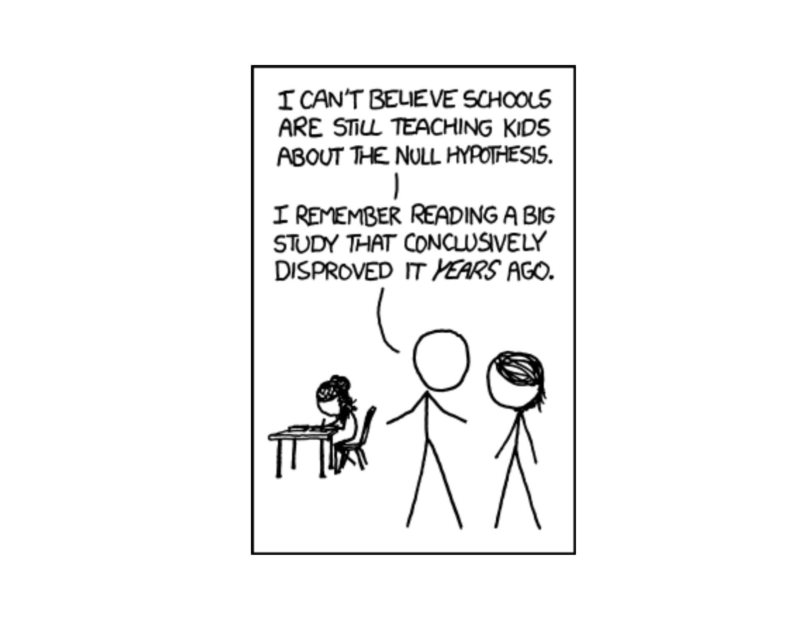
Lesson 20: Intro to Hypothesis Testing

What We Did: Lessons 17–19
NoteLesson 17: Central Limit Theorem
The Central Limit Theorem (CLT): If \(X_1, X_2, \ldots, X_n\) are iid with mean \(\mu\) and standard deviation \(\sigma\), then for large \(n\):
\[\bar{X} \sim N\left(\mu, \frac{\sigma^2}{n}\right)\]
Standard Error of the Mean: \(\sigma_{\bar{X}} = \frac{\sigma}{\sqrt{n}}\)
Rule of thumb: \(n \geq 30\) unless the population is already normal.
NoteLesson 18: Confidence Intervals I
Confidence Interval for a Mean:
| Formula | When to Use | |
|---|---|---|
| Large sample (\(n \geq 30\)) | \(\bar{X} \pm z_{\alpha/2} \cdot \dfrac{\sigma}{\sqrt{n}}\) | Random sample, independence, \(s \approx \sigma\) |
| Small sample (\(n < 30\)) | \(\bar{X} \pm t_{\alpha/2, n-1} \cdot \dfrac{s}{\sqrt{n}}\) | Random sample, independence, population ~ Normal |
Key ideas: Higher confidence → wider interval. Larger \(n\) → narrower interval.
NoteLesson 19: Confidence Intervals II
Confidence Interval for a Proportion:
\[\hat{p} \pm z_{\alpha/2} \cdot \sqrt{\frac{\hat{p}(1-\hat{p})}{n}}\]
Conditions: \(n\hat{p} \geq 10\) and \(n(1-\hat{p}) \geq 10\)
Interpretation: “We are C% confident that [interval] captures the true [parameter in context].” The confidence level describes the method’s long-run success rate, not the probability any single interval is correct.
What We’re Doing: Lesson 20
Objectives
- State \(H_0\) and \(H_a\) for practical questions
- Compute test statistics and \(p\)-values
- Link significance and \(\alpha\)
Required Reading
Devore, Sections 8.1, 8.2
Break!
DMath Volleyball!!
Math vs DPE
NotePreviously 11-1
12-1
Math vs DPE
NotePreviously 12-1
13-1
Math vs DPE
NotePreviously 13-1
13-2
Math vs DPE
NotePreviously 13-2
13-3
The Takeaway for Today
ImportantHypothesis Testing Framework
Every hypothesis test follows the same four steps:
- State hypotheses: \(H_0\) (null — status quo) vs. \(H_a\) (alternative — what we want to show)
- Compute a test statistic: How far is our sample result from what \(H_0\) predicts?
- Find the \(p\)-value: If \(H_0\) were true, how likely is a result this extreme or more?
- Make a decision: If \(p \leq \alpha\), reject \(H_0\). If \(p > \alpha\), fail to reject \(H_0\).
Key formula (test statistic for a mean):
\[z = \frac{\bar{x} - \mu_0}{\sigma / \sqrt{n}} \qquad \text{or} \qquad t = \frac{\bar{x} - \mu_0}{s / \sqrt{n}}\]
Remember This Problem?
In Lesson 18, we built a confidence interval for cadet heights:
NoteCadet Heights (Lesson 18)
We took a random sample of \(n = 35\) cadets and measured their heights. We found \(\bar{x} = 69.35\) inches with \(\sigma = 3.62\) inches.
Let’s reconstruct the 95% confidence interval for the true mean height:
xbar <- 69.35; sigma <- 3.62; n <- 35
se <- sigma / sqrt(n)
z_star <- qnorm(0.975)
margin <- z_star * se
c(lower = xbar - margin, upper = xbar + margin) lower upper
68.15071 70.54929 Remember, a confidence interval is really about the z-distribution. We’re finding the middle 95% of the standard normal and mapping it back to our scale:
\[\bar{x} \pm z_{\alpha/2} \cdot \frac{\sigma}{\sqrt{n}} = 69.35 \pm 1.96 \cdot \frac{3.62}{\sqrt{35}} = 69.35 \pm 1.20 = \left(68.15, \; 70.55\right)\]
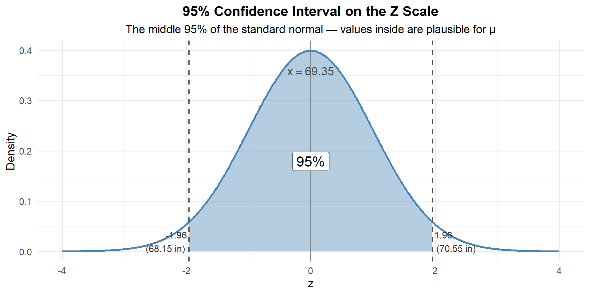
Any value of \(\mu\) that maps inside this shaded region is plausible. Any value that maps outside is not.
Is 70 inches a possible value for \(\mu\)?
Someone claims the true average cadet height is 70 inches. Is that plausible given our data?
Well, 70 falls inside our 95% CI of \((68.15, 70.55)\). So yes — 70 is a plausible value for \(\mu\).
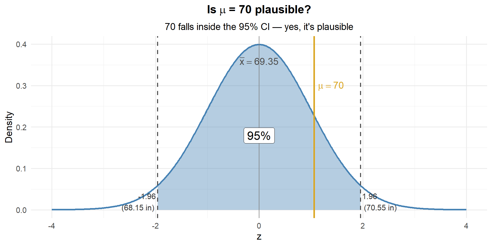
Is 71 inches a possible value for \(\mu\)?
What about 71? Does it fall inside our CI?
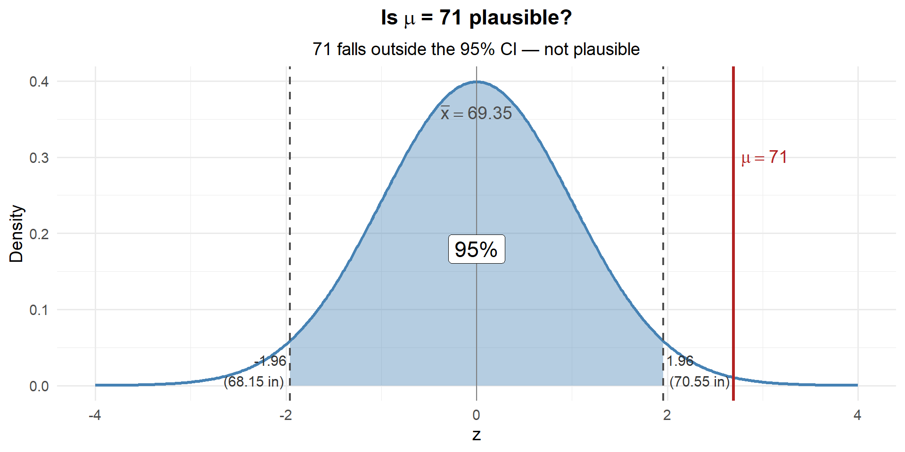
71 is outside the CI. Based on the CI alone, 71 is not a plausible value for \(\mu\). But let’s dig deeper — how unlikely is it?
But How Likely Is It?
The CI tells us 70 is plausible, but it doesn’t tell us how likely our data is if 70 really is the true mean. To answer that, we need to flip our perspective.
For the CI, we built the distribution around \(\bar{x}\) and asked “where could \(\mu\) be?”
Now let’s do the opposite: under the assumption \(\mu = 70\), how likely are we to get the sample we actually saw?”
If \(\mu = 70\), the sampling distribution of \(\bar{X}\) is centered at 70:
\[\bar{X} \sim N\left(70, \; \frac{3.62^2}{35}\right)\]
Let’s draw that distribution and drop our observed \(\bar{x} = 69.35\) on it:
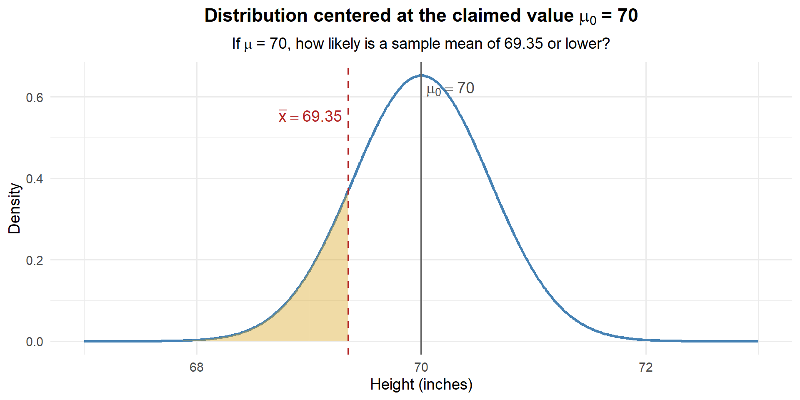
How much of the distribution is in that shaded region? Let’s find out:
# If mu = 70, what's the probability of observing xbar <= 69.35?
pnorm(69.35, mean = 70, sd = sigma / sqrt(n))[1] 0.1440544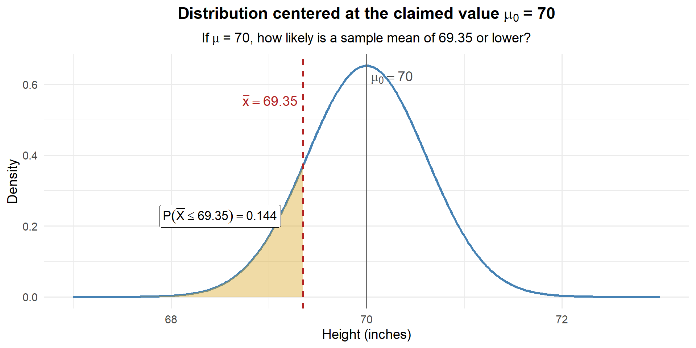
About 14.4% of the time, we’d see a sample mean this low or lower if \(\mu\) really were 70. That’s not unusual at all — our data are perfectly consistent with \(\mu = 70\).
Now What If Someone Claims \(\mu = 71\)?
We already saw that 71 falls outside our CI — so it’s not a plausible value. But let’s ask the same question: if \(\mu = 71\), how likely is our data?
If \(\mu = 71\), the sampling distribution of \(\bar{X}\) is centered at 71:
\[\bar{X} \sim N\left(71, \; \frac{3.62^2}{35}\right)\]
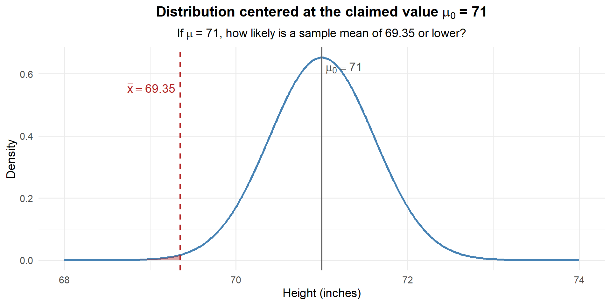
How much area is in that shaded region?
# If mu = 71, what's the probability of observing xbar <= 69.35?
pnorm(69.35, mean = 71, sd = sigma / sqrt(n))[1] 0.003503034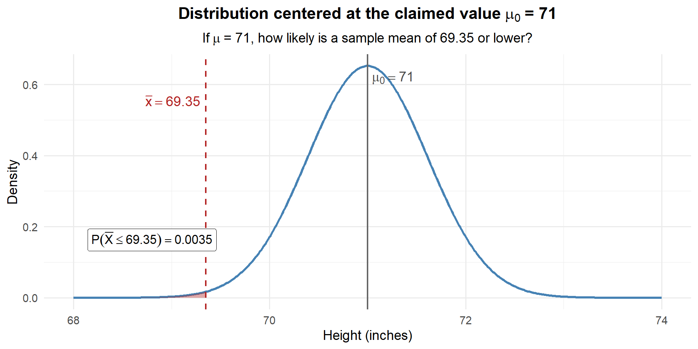
Only about 0.35% chance. If the true mean were really 71, we would almost never see a sample mean as low as 69.35. Our data is way out in the left tail of this distribution. We have strong evidence that the true mean is less than 71 inches.
Now Let’s Standardize
The plots above work great — but every time the claimed value or the units change, we’d need a brand new distribution. What if we could always use the same distribution?
We can. Just standardize:
\[z = \frac{\bar{x} - \mu_0}{\sigma / \sqrt{n}}\]
This converts our question from “how far is \(\bar{x}\) from \(\mu_0\) in inches?” to “how far is \(\bar{x}\) from \(\mu_0\) in standard errors?” The result always lives on the \(N(0,1)\) curve — no matter what the units are.
Let’s redo both examples on the z-scale:
For \(\mu_0 = 70\):
\[z = \frac{69.35 - 70}{3.62 / \sqrt{35}} = \frac{-0.65}{0.612} = -1.06\]
xbar <- 69.35; sigma <- 3.62; n <- 35
se <- sigma / sqrt(n)
# Standardize
z_70 <- (xbar - 70) / se
z_70[1] -1.06228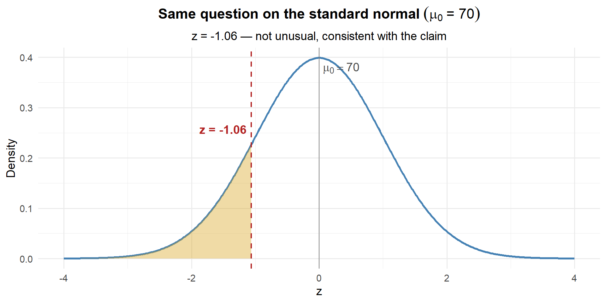
# Same answer as before!
pnorm(z_70)[1] 0.1440544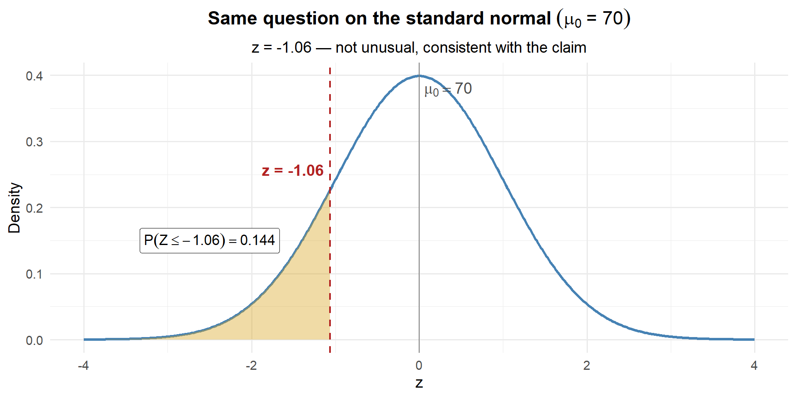
Same answer: 0.144. The z-score of \(-1.06\) is not unusual on the standard normal — consistent with the claim.
For \(\mu_0 = 71\):
\[z = \frac{69.35 - 71}{3.62 / \sqrt{35}} = \frac{-1.65}{0.612} = -2.70\]
z_71 <- (xbar - 71) / se
z_71[1] -2.696556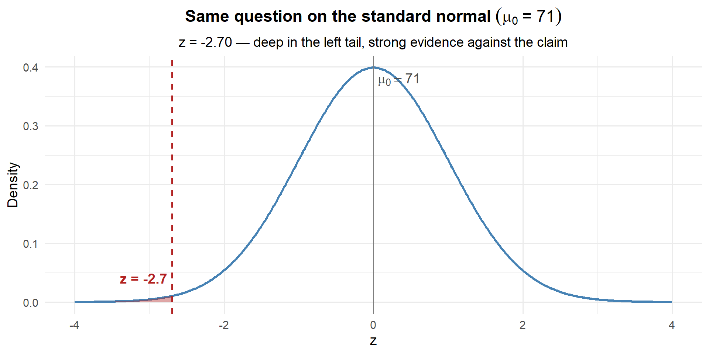
# Same answer as before!
pnorm(z_71)[1] 0.003503034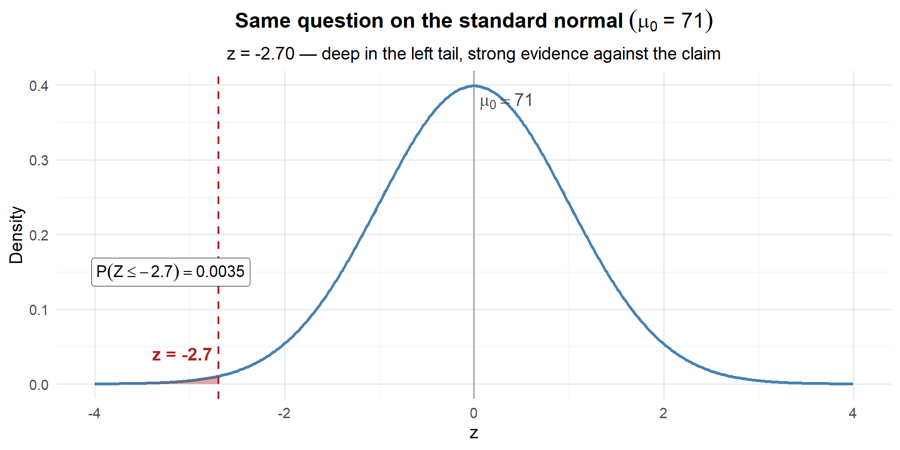
Same answer: 0.0035. Deep in the left tail — strong evidence against the claim.
ImportantWhy Standardize?
pnorm(69.35, mean = 71, sd = 0.612) and pnorm(-2.70) give the exact same answer. So why bother?
- One universal scale: Every hypothesis test maps onto the same \(N(0,1)\) curve — whether we’re measuring inches, hours, or test scores
- Instant intuition: \(z = -2.70\) immediately tells you “2.7 standard errors below the claim” without knowing anything else about the problem
- Easy comparison: \(z = -1.06\) vs. \(z = -2.70\) — you can instantly see which claim is more implausible
The z-score is the test statistic — it’s the standardized distance between your data and the claim.
The Big Idea
Notice what we did:
- CI perspective: We built the distribution around \(\bar{x}\) and asked “is \(\mu_0\) plausible?”
- Hypothesis testing perspective: We built the distribution around \(\mu_0\) and asked “is our data likely?”
- Standardized: We converted to the z-scale so every problem uses the same \(N(0,1)\) curve
- For \(\mu_0 = 70\): \(z = -1.06\), \(p = 0.144\) → not unusual → consistent with the claim
- For \(\mu_0 = 71\): \(z = -2.70\), \(p = 0.0035\) → extremely unlikely → evidence against the claim
That probability — the chance of seeing a z-score this extreme or more, assuming the claimed value is true — is called the \(p\)-value. And hypothesis testing is just a formal framework for doing exactly what we just did.
Let’s formalize it. Suppose the Army claims \(\mu = 71\). We suspect \(\mu < 71\). In hypothesis testing notation:
\[H_0: \mu = 71 \qquad \text{vs.} \qquad H_a: \mu < 71\]
\[z = \frac{\bar{x} - \mu_0}{\sigma / \sqrt{n}} = \frac{69.35 - 71}{3.62 / \sqrt{35}} = -2.70\]
\[p\text{-value} = P(Z \leq -2.70) = 0.0035\]
Since \(0.0035 < 0.05\), we reject the Army’s claim — there is sufficient evidence that the true mean cadet height is less than 71 inches.
Let’s Formalize This: The Hypothesis Test
We’ve been doing hypothesis testing without naming it. Let’s put a framework around it.
The Setup
- Start with a claim — the null hypothesis (\(H_0\))
- Gather data — compute how likely the data is if the claim were true
- Decide — if the data is unlikely enough, reject the claim
What’s “Unlikely Enough”?
We need a threshold — called \(\alpha\) (alpha), the significance level.
- Pick \(\alpha\) before looking at the data (typically \(\alpha = 0.05\))
- If the probability of our data under \(H_0\) is less than \(\alpha\) → reject
- If not → fail to reject
The Hypotheses
ImportantNull and Alternative Hypotheses
- \(H_0\) (null): The claim we’re testing. Always uses \(=\).
- \(H_a\) (alternative): What we’re looking for evidence of. Strict inequality (\(\neq\), \(<\), or \(>\)).
Analogy: \(H_0\) = “innocent until proven guilty.” The burden of proof is on \(H_a\).
Three Types of Tests
| Type | \(H_0\) | \(H_a\) | When to Use |
|---|---|---|---|
| Left-tailed | \(\mu \geq \mu_0\) | \(\mu < \mu_0\) | Evidence the parameter is smaller |
| Right-tailed | \(\mu \leq \mu_0\) | \(\mu > \mu_0\) | Evidence the parameter is larger |
| Two-tailed | \(\mu = \mu_0\) | \(\mu \neq \mu_0\) | Evidence of any difference |
The Four Steps
NoteStep 1: State Hypotheses
Write \(H_0\) and \(H_a\) based on the context of the problem.
NoteStep 2: Compute the Test Statistic
How far is our data from the claim, in standard errors?
\[z = \frac{\bar{x} - \mu_0}{\sigma / \sqrt{n}} \qquad \text{or} \qquad t = \frac{\bar{x} - \mu_0}{s / \sqrt{n}}\]
NoteStep 3: Find the p-value
If \(H_0\) were true, how likely is a result this extreme?
| Test Type | \(p\)-value | R code |
|---|---|---|
| Left-tailed | \(P(Z \leq z)\) | pnorm(z) |
| Right-tailed | \(P(Z \geq z)\) | 1 - pnorm(z) |
| Two-tailed | \(2 \times P(Z \geq |z|)\) | 2 * (1 - pnorm(abs(z))) |
NoteStep 4: Decide and Conclude in Context
- \(p \leq \alpha\) → Reject \(H_0\)
- \(p > \alpha\) → Fail to reject \(H_0\)
We never “accept” \(H_0\). “Fail to reject” = jury says “not guilty” (not the same as “innocent”).
Let’s work through all three types.
Example 1: Left-Tailed Test (Cadet Heights)
The Army claims that the average height of cadets is at least 71 inches. A researcher suspects it’s actually less than 71. She samples \(n = 35\) cadets and finds \(\bar{x} = 69.35\) inches with \(\sigma = 3.62\) inches.
Step 1: State the Hypotheses
The researcher suspects the mean is less than 71 — this is a left-tailed test:
\[H_0: \mu = 71 \qquad \text{vs.} \qquad H_a: \mu < 71\]
Step 2: Compute the Test Statistic
\[z = \frac{\bar{x} - \mu_0}{\sigma / \sqrt{n}} = \frac{69.35 - 71}{3.62 / \sqrt{35}} = \frac{-1.65}{0.612} = -2.70\]
xbar <- 69.35; mu0 <- 71; sigma <- 3.62; n <- 35
z <- (xbar - mu0) / (sigma / sqrt(n))
z[1] -2.696556Our sample mean is 2.70 standard errors below what \(H_0\) claims.
Step 3: Find the \(p\)-Value
This is left-tailed, so we want \(P(Z \leq z)\):
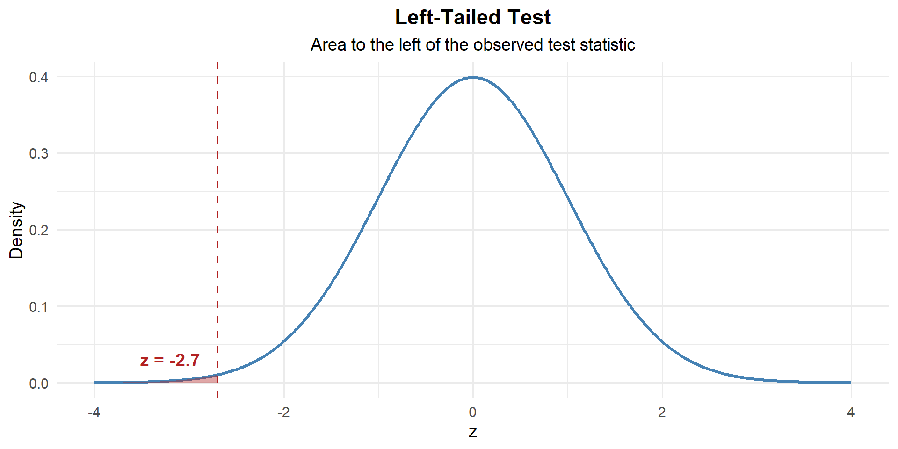
p_value <- pnorm(z)
p_value[1] 0.003503034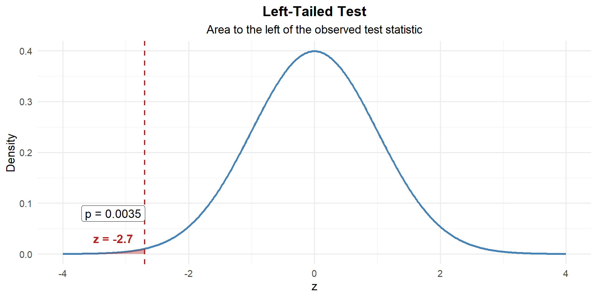
\[p\text{-value} = P(Z \leq -2.7) = 0.0035\]
Step 4: Decide and Conclude
At \(\alpha = 0.05\):
\[p\text{-value} = 0.0035 < 0.05 = \alpha\]
We reject \(H_0\). At the 5% significance level, there is sufficient evidence to conclude that the true average cadet height is less than 71 inches.
Example 2: Right-Tailed Test (Rifle Qualification)
The standard M4 qualification score is 23 out of 40 to achieve “marksman.” A platoon leader believes her platoon scores higher than 23 on average. She tests \(n = 40\) Soldiers and finds \(\bar{x} = 25.1\) with \(s = 4.8\).
Step 1: State the Hypotheses
The platoon leader suspects scores are greater than 23 — this is a right-tailed test:
\[H_0: \mu = 23 \qquad \text{vs.} \qquad H_a: \mu > 23\]
Step 2: Compute the Test Statistic
\[z = \frac{\bar{x} - \mu_0}{s / \sqrt{n}} = \frac{25.1 - 23}{4.8 / \sqrt{40}} = \frac{2.1}{0.759} = 2.77\]
xbar <- 25.1; mu0 <- 23; s <- 4.8; n <- 40
z <- (xbar - mu0) / (s / sqrt(n))
z[1] 2.766993Our sample mean is 2.77 standard errors above what \(H_0\) claims.
Step 3: Find the \(p\)-Value
This is right-tailed, so we want \(P(Z \geq z)\):
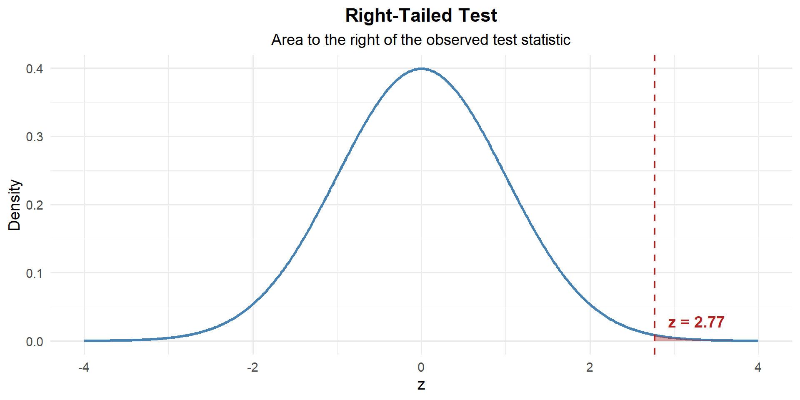
p_value <- 1 - pnorm(z)
p_value[1] 0.002828799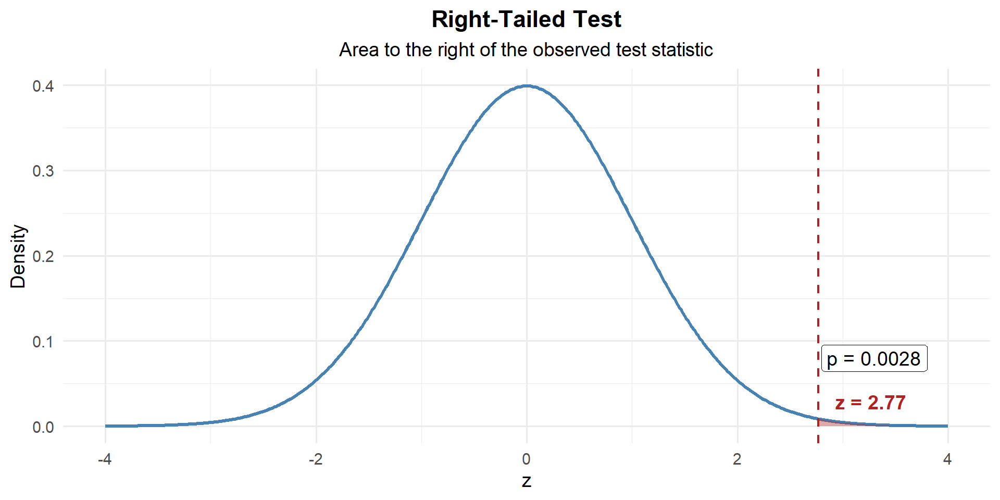
\[p\text{-value} = P(Z \geq 2.77) = 1 - P(Z < 2.77) = 0.0028\]
Step 4: Decide and Conclude
At \(\alpha = 0.05\):
\[p\text{-value} = 0.0028 < 0.05 = \alpha\]
We reject \(H_0\). At the 5% significance level, there is sufficient evidence that this platoon’s average qualification score exceeds 23.
Example 3: Two-Tailed Test (Equipment Readiness)
A brigade standard requires that vehicle maintenance be completed in \(\mu = 4.0\) hours on average. The maintenance officer suspects the actual time differs from 4.0 hours (it could be higher or lower). A random sample of \(n = 50\) maintenance jobs gives \(\bar{x} = 4.35\) hours with \(s = 1.1\) hours.
Step 1: State the Hypotheses
The officer suspects the time differs — could be higher or lower — this is a two-tailed test:
\[H_0: \mu = 4.0 \qquad \text{vs.} \qquad H_a: \mu \neq 4.0\]
Step 2: Compute the Test Statistic
\[z = \frac{4.35 - 4.0}{1.1 / \sqrt{50}} = \frac{0.35}{0.1556} = 2.249\]
xbar <- 4.35; mu0 <- 4.0; s <- 1.1; n <- 50
z <- (xbar - mu0) / (s / sqrt(n))
z[1] 2.249885Our sample mean is 2.25 standard errors above what \(H_0\) claims.
Step 3: Find the \(p\)-Value
This is two-tailed — evidence against \(H_0\) could come from either direction. So we need the area in both tails:
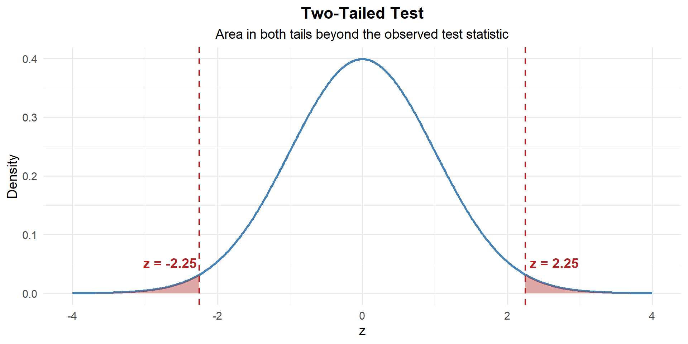
# Two-tailed p-value: both tails
p_value <- 2 * (1 - pnorm(abs(z)))
p_value[1] 0.02445623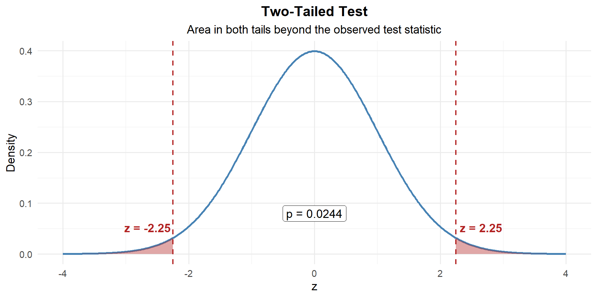
\[p\text{-value} = 2 \times P(Z \geq |2.25|) = 0.0245\]
Step 4: Decide and Conclude
At \(\alpha = 0.05\):
\[p\text{-value} = 0.0245 < 0.05 = \alpha\]
We reject \(H_0\). At the 5% significance level, there is sufficient evidence that the average maintenance time differs from 4.0 hours.
Example 4: All the Wrenches
The standard rucksack weight for a 12-mile ruck march is 35 lbs. A company commander suspects her Soldiers’ rucks differ from the standard (could be over- or under-packed). She weighs a random sample of \(n = 15\) rucks and finds \(\bar{x} = 36.2\) lbs with \(s = 3.8\) lbs.
Step 1: State the Hypotheses
The commander suspects the weight differs from 35 — this is a two-tailed test:
\[H_0: \mu = 35 \qquad \text{vs.} \qquad H_a: \mu \neq 35\]
Step 2: Compute the Test Statistic
Since \(\sigma\) is unknown and \(n = 15\) is small, we use the \(t\)-statistic with \(n - 1 = 14\) degrees of freedom:
\[t = \frac{\bar{x} - \mu_0}{s / \sqrt{n}} = \frac{36.2 - 35}{3.8 / \sqrt{15}} = \frac{1.2}{0.981} = 1.22\]
xbar <- 36.2; mu0 <- 35; s <- 3.8; n <- 15
t_stat <- (xbar - mu0) / (s / sqrt(n))
t_stat[1] 1.223047Our sample mean is 1.22 standard errors above what \(H_0\) claims. That’s not very far.
Step 3: Find the \(p\)-Value
This is two-tailed with a \(t\)-distribution, so we use pt() instead of pnorm():
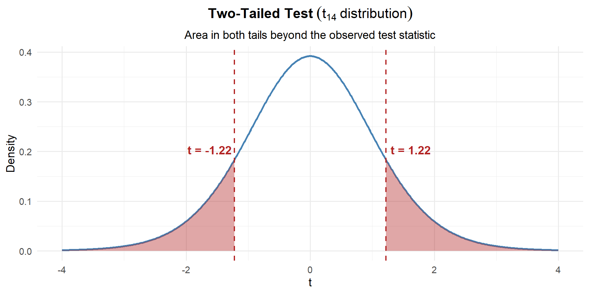
# Two-tailed p-value using the t-distribution
p_value <- 2 * (1 - pt(abs(t_stat), df = n - 1))
p_value[1] 0.2415008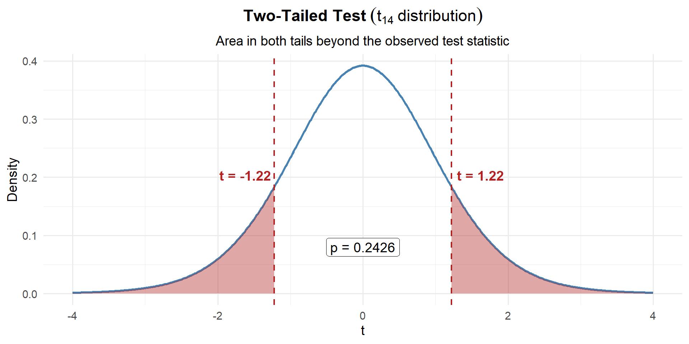
\[p\text{-value} = 2 \times P(t_{14} \geq |1.22|) = 0.2415\]
That’s a large p-value — there’s a 24.2% chance of seeing a result this far from 35 (in either direction) if the true mean really is 35.
Step 4: Decide and Conclude
At \(\alpha = 0.05\):
\[p\text{-value} = 0.2415 > 0.05 = \alpha\]
We fail to reject \(H_0\). At the 5% significance level, there is not sufficient evidence that the average rucksack weight differs from 35 lbs. The 1.2 lb difference we observed could easily be due to random chance.
Warning‘Fail to Reject’ ≠ ‘The Standard is Met’
This does not mean the average is exactly 35 lbs. It means we don’t have enough evidence to say it’s different. With only 15 rucks and this much variability, we might just not have enough data to detect a real difference.
Summary
| Left-tailed | Right-tailed | Two-tailed | |
|---|---|---|---|
| \(H_0\) | \(\mu = \mu_0\) | \(\mu = \mu_0\) | \(\mu = \mu_0\) |
| \(H_a\) | \(\mu < \mu_0\) | \(\mu > \mu_0\) | \(\mu \neq \mu_0\) |
| Test stat (large \(n\) or \(\sigma\) known) | \(z = \frac{\bar{x} - \mu_0}{\sigma / \sqrt{n}}\) | same | same |
| Test stat (small \(n\), \(\sigma\) unknown) | \(t = \frac{\bar{x} - \mu_0}{s / \sqrt{n}}\) | same | same |
| \(p\)-value (z) | pnorm(z) |
1 - pnorm(z) |
2*(1 - pnorm(abs(z))) |
| \(p\)-value (t) | pt(t, df=n-1) |
1 - pt(t, df=n-1) |
2*(1 - pt(abs(t), df=n-1)) |
| If \(p \leq \alpha\) | Reject \(H_0\): “…sufficient evidence that [claim in \(H_a\)]” | same | same |
| If \(p > \alpha\) | Fail to reject \(H_0\): “…not sufficient evidence that [claim in \(H_a\)]” | same | same |
Board Problems
Problem 1: PT Improvement (Right-tailed, large sample)
After a new fitness program, cadets take a diagnostic ACFT. The program claims it improves the average total score above the baseline of \(\mu_0 = 440\) points. A sample of \(n = 40\) cadets gives \(\bar{x} = 448\) with \(s = 32\).
NoteQuestions
State the hypotheses.
Compute the test statistic and \(p\)-value.
At \(\alpha = 0.05\), state your conclusion in context.
TipAnswers
- The program claims improvement (scores above 440) — right-tailed:
\[H_0: \mu = 440 \qquad H_a: \mu > 440\]
xbar <- 448; mu0 <- 440; s <- 32; n <- 40
z <- (xbar - mu0) / (s / sqrt(n))
z[1] 1.581139p_value <- 1 - pnorm(z)
p_value[1] 0.05692315- \(p = 0.0569 > 0.05\), so we fail to reject \(H_0\). At the 5% significance level, there is not sufficient evidence that the new fitness program increases average ACFT scores above 440 points.
Problem 2: Convoy Speed (Right-tailed, small sample)
A convoy commander claims his vehicles average more than 25 mph on supply routes. A sample of \(n = 12\) convoys gives \(\bar{x} = 27.3\) mph with \(s = 4.1\) mph.
NoteQuestions
State the hypotheses.
Compute the test statistic and \(p\)-value.
At \(\alpha = 0.05\), state your conclusion in context.
TipAnswers
- The commander claims speeds are above 25 — right-tailed:
\[H_0: \mu = 25 \qquad H_a: \mu > 25\]
- Since \(n = 12\) and \(\sigma\) unknown, use \(t\) with \(df = 11\):
xbar <- 27.3; mu0 <- 25; s <- 4.1; n <- 12
t_stat <- (xbar - mu0) / (s / sqrt(n))
t_stat[1] 1.943277p_value <- 1 - pt(t_stat, df = n - 1)
p_value[1] 0.03900271- \(p = 0.039 < 0.05\), so we reject \(H_0\). At the 5% significance level, there is sufficient evidence that the average convoy speed exceeds 25 mph.
Problem 3: Sleep Duration (Left-tailed, large sample)
The Army recommends cadets get at least 7 hours of sleep per night. A researcher suspects cadets sleep less than 7 hours. A survey of \(n = 50\) cadets gives \(\bar{x} = 6.6\) hours with \(s = 1.4\) hours.
NoteQuestions
State the hypotheses.
Compute the test statistic and \(p\)-value.
At \(\alpha = 0.05\), state your conclusion in context.
TipAnswers
- The researcher suspects sleep is less than 7 — left-tailed:
\[H_0: \mu = 7 \qquad H_a: \mu < 7\]
xbar <- 6.6; mu0 <- 7; s <- 1.4; n <- 50
z <- (xbar - mu0) / (s / sqrt(n))
z[1] -2.020305p_value <- pnorm(z)
p_value[1] 0.02167588- \(p = 0.0217 < 0.05\), so we reject \(H_0\). At the 5% significance level, there is sufficient evidence that cadets average less than 7 hours of sleep per night.
Problem 4: Weapon Cleaning Time (Left-tailed, small sample)
A platoon sergeant believes his Soldiers can clean their M4s in under 15 minutes on average. He times \(n = 10\) Soldiers and finds \(\bar{x} = 13.8\) minutes with \(s = 3.2\) minutes.
NoteQuestions
State the hypotheses.
Compute the test statistic and \(p\)-value.
At \(\alpha = 0.05\), state your conclusion in context.
TipAnswers
- The sergeant claims the time is less than 15 — left-tailed:
\[H_0: \mu = 15 \qquad H_a: \mu < 15\]
- Since \(n = 10\) and \(\sigma\) unknown, use \(t\) with \(df = 9\):
xbar <- 13.8; mu0 <- 15; s <- 3.2; n <- 10
t_stat <- (xbar - mu0) / (s / sqrt(n))
t_stat[1] -1.185854p_value <- pt(t_stat, df = n - 1)
p_value[1] 0.1330213- \(p = 0.133 > 0.05\), so we fail to reject \(H_0\). At the 5% significance level, there is not sufficient evidence that the average cleaning time is less than 15 minutes.
Problem 5: Equipment Readiness (Two-tailed, large sample)
A brigade standard requires vehicle maintenance to be completed in \(\mu = 4.0\) hours on average. The maintenance officer suspects the actual time differs from 4.0 hours. A random sample of \(n = 50\) jobs gives \(\bar{x} = 4.35\) hours with \(s = 1.1\) hours.
NoteQuestions
State the hypotheses.
Compute the test statistic and \(p\)-value.
At \(\alpha = 0.05\), state your conclusion in context.
Construct a 95% CI. Is it consistent with your test result?
TipAnswers
- The officer suspects the time differs — two-tailed:
\[H_0: \mu = 4.0 \qquad H_a: \mu \neq 4.0\]
xbar <- 4.35; mu0 <- 4.0; s <- 1.1; n <- 50
z <- (xbar - mu0) / (s / sqrt(n))
z[1] 2.249885p_value <- 2 * (1 - pnorm(abs(z)))
p_value[1] 0.02445623\(p = 0.0245 < 0.05\), so we reject \(H_0\). At the 5% significance level, there is sufficient evidence that the average maintenance time differs from 4.0 hours.
se <- s / sqrt(n)
z_star <- qnorm(0.975)
c(lower = xbar - z_star * se, upper = xbar + z_star * se) lower upper
4.045101 4.654899 The 95% CI is \((4.045, 4.655)\). Since \(\mu_0 = 4.0\) is outside this interval, we reject \(H_0\) — consistent with the test.
Problem 6: Ruck March Weight (Two-tailed, small sample)
The standard rucksack weight is 35 lbs. A squad leader suspects his squad’s rucks differ from the standard. He weighs \(n = 18\) rucks and finds \(\bar{x} = 36.5\) lbs with \(s = 4.2\) lbs.
NoteQuestions
State the hypotheses.
Compute the test statistic and \(p\)-value.
At \(\alpha = 0.05\), state your conclusion in context.
Construct a 95% CI. Is it consistent with your test result?
TipAnswers
- The squad leader suspects the weight differs — two-tailed:
\[H_0: \mu = 35 \qquad H_a: \mu \neq 35\]
- Since \(n = 18\) and \(\sigma\) unknown, use \(t\) with \(df = 17\):
xbar <- 36.5; mu0 <- 35; s <- 4.2; n <- 18
t_stat <- (xbar - mu0) / (s / sqrt(n))
t_stat[1] 1.515229p_value <- 2 * (1 - pt(abs(t_stat), df = n - 1))
p_value[1] 0.1480867\(p = 0.1481 > 0.05\), so we fail to reject \(H_0\). At the 5% significance level, there is not sufficient evidence that the average rucksack weight differs from 35 lbs.
se <- s / sqrt(n)
t_star <- qt(0.975, df = n - 1)
c(lower = xbar - t_star * se, upper = xbar + t_star * se) lower upper
34.41139 38.58861 The 95% CI is \((34.41, 38.59)\). Since \(\mu_0 = 35\) is inside this interval, we fail to reject \(H_0\) — consistent with the test.
Before You Leave
Today
- Hypotheses: \(H_0\) (null, always \(=\)) vs. \(H_a\) (alternative, strict inequality)
- Test statistic: Measures how far the sample is from \(H_0\) in SE units
- \(p\)-value: Probability of seeing data this extreme if \(H_0\) is true
- Decision: Reject \(H_0\) if \(p \leq \alpha\); fail to reject if \(p > \alpha\) Any questions?
Next Lesson
- Check conditions for the one-sample \(t\)-test
- Carry out and interpret a one-sample \(t\)-test
- Compare \(p\)-value and CI conclusions
Upcoming Graded Events
- WebAssign 8.1, 8.2 - Due before Lesson 21
- WPR II - Lesson 27